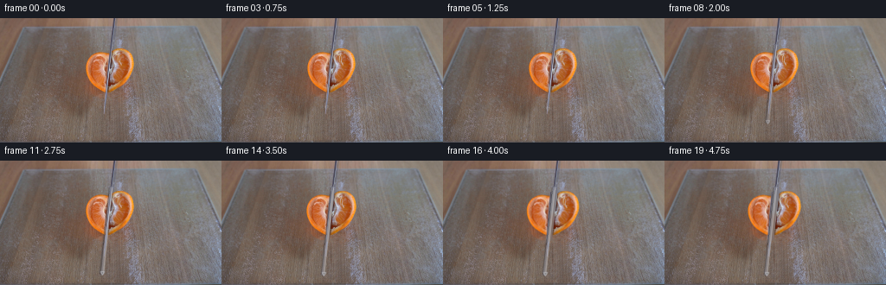
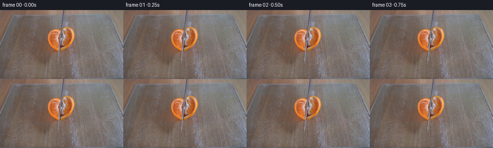
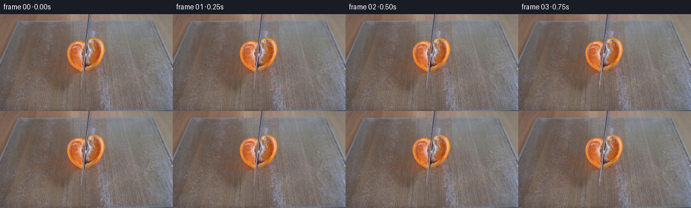

CODING AGENTS AS PIXEL WORLD MODELS
traex/GPT-5.6-Sol · 0041
点击播放 · 原生 RGB 像素
逐轮保存的候选
回放视频、检查图与代码变化。
每份候选均可单独播放。实际图片检查记录在下方工具轨迹中。
候选 01播放与检查图
点击播放 · 原生 RGB 像素


展开代码变化
--- 上一保存版本
+++ 本次保存版本
@@ -0,0 +1,190 @@
+"""Generate a short, locked-off demonstration of a knife cutting citrus.
+
+The source photograph already contains the complete set, including the knife
+at the beginning of its stroke. The animation below therefore keeps the
+photographic plate and advances the thin knife edge through the fruit. Near
+the end of the stroke the two freshly-cut parts relax a few pixels apart.
+Everything is done with deterministic RGB image operations.
+"""
+
+from pathlib import Path
+
+import cv2
+import numpy as np
+from PIL import Image
+
+import artifact_io
+
+
+ROOT = Path(__file__).resolve().parent
+H, W = 144, 256
+
+
+def smoothstep(x: float) -> float:
+ x = float(np.clip(x, 0.0, 1.0))
+ return x * x * (3.0 - 2.0 * x)
+
+
+def citrus_mask(rgb: np.ndarray) -> np.ndarray:
+ """Recover the silhouette of the tangerine from its orange pixels."""
+ r, g, b = [rgb[..., i].astype(np.int16) for i in range(3)]
+ seed = ((r > 138) & (r > g + 28) & (g > b + 8)).astype(np.uint8)
+ roi = np.zeros_like(seed)
+ roi[25:101, 88:169] = 1
+ seed &= roi
+
+ # The blade and segment membranes interrupt the orange color. The convex
+ # hull gives a faithful solid silhouette while preserving the actual outer
+ # contour discovered from the photograph.
+ ys, xs = np.where(seed)
+ pts = np.column_stack([xs, ys]).astype(np.int32)
+ hull = cv2.convexHull(pts)
+ mask = np.zeros((H, W), np.uint8)
+ cv2.fillConvexPoly(mask, hull, 255)
+ # Keep the extraction local if an isolated warm highlight was included.
+ mask[:31] = 0
+ mask[98:] = 0
+ return mask
+
+
+def transform_layer(rgb: np.ndarray, mask: np.ndarray, center, angle, dx, dy):
+ """Return an antialiased affine-transformed RGB layer and alpha mask."""
+ mat = cv2.getRotationMatrix2D(center, angle, 1.0)
+ mat[:, 2] += (dx, dy)
+ layer = cv2.warpAffine(
+ rgb, mat, (W, H), flags=cv2.INTER_CUBIC,
+ borderMode=cv2.BORDER_REFLECT_101,
+ )
+ alpha = cv2.warpAffine(
+ mask, mat, (W, H), flags=cv2.INTER_LINEAR,
+ borderMode=cv2.BORDER_CONSTANT, borderValue=0,
+ )
+ return layer, alpha.astype(np.float32) / 255.0
+
+
+def composite(dst: np.ndarray, src: np.ndarray, alpha: np.ndarray) -> np.ndarray:
+ a = alpha[..., None]
+ return dst * (1.0 - a) + src.astype(np.float32) * a
+
+
+def draw_knife_edge(frame: np.ndarray, progress: float, separation: float) -> None:
+ """Extend the existing oblique steel edge down through the cutting board."""
+ # The observed edge follows x = 132.2 - 0.108 y. Its tip starts just
+ # beneath the tangerine and advances along that same axis.
+ tip_y = int(round(103 + 28 * smoothstep(progress)))
+ start_y = 31
+ yy = np.arange(start_y, tip_y + 1)
+ xx = 132.2 - 0.108 * yy
+
+ # A narrow contact shadow is strongest inside the fruit and in the newly
+ # opened cut. It makes the slit legible without painting over the natural
+ # segment detail from the source photograph.
+ for y, x in zip(yy, xx):
+ xi = int(np.floor(x))
+ if 35 <= y <= 97:
+ strength = 0.15 + 0.13 * progress + 0.035 * separation
+ old = frame[y, max(0, xi - 2)].astype(np.float32)
+ frame[y, max(0, xi - 2)] = np.clip(old * (1.0 - strength), 0, 255)
+
+ # Sub-pixel steel strip: charcoal edge, cool body, then a slim reflected
+ # highlight. Blend rather than overwrite to retain photographic texture.
+ overlay = frame.copy()
+ points_shadow, points_body = [], []
+ for y in (start_y, tip_y):
+ x = 132.2 - 0.108 * y
+ points_shadow.append((int(round(x - 2.0)), y))
+ points_body.append((int(round(x - 0.6)), y))
+ cv2.line(overlay, points_shadow[0], points_shadow[1], (63, 61, 68), 2,
+ lineType=cv2.LINE_AA)
+ cv2.line(overlay, points_body[0], points_body[1], (154, 157, 170), 2,
+ lineType=cv2.LINE_AA)
+ cv2.line(overlay, (points_body[0][0] + 1, start_y),
+ (points_body[1][0] + 1, tip_y), (213, 211, 210), 1,
+ lineType=cv2.LINE_AA)
+
+ # Keep the pre-existing blade nearly untouched early in the shot, with the
+ # synthetic edge becoming visible as the cutting stroke develops.
+ amount = 0.10 + 0.38 * smoothstep(progress)
+ np.copyto(frame, np.clip(frame * (1.0 - amount) + overlay * amount, 0, 255).astype(np.uint8))
+
+ # A triangular point just below the long edge communicates the downward
+ # travel at this small resolution.
+ tx = int(round(132.2 - 0.108 * tip_y))
+ tri = np.array([[tx - 2, tip_y - 2], [tx + 2, tip_y - 2], [tx, tip_y + 2]], np.int32)
+ tip_layer = frame.copy()
+ cv2.fillConvexPoly(tip_layer, tri, (108, 110, 120), lineType=cv2.LINE_AA)
+ cv2.polylines(tip_layer, [tri], True, (192, 192, 195), 1, cv2.LINE_AA)
+ a = 0.18 + 0.42 * smoothstep(progress)
+ frame[:] = np.clip(frame * (1.0 - a) + tip_layer * a, 0, 255).astype(np.uint8)
+
+
+def generate() -> np.ndarray:
+ base = np.asarray(Image.open(ROOT / "first_frame.png").convert("RGB"), dtype=np.uint8)
+ assert base.shape == (H, W, 3)
+
+ fruit = citrus_mask(base)
+ # A clean glass-board plate is only exposed in the 1--3 pixel cut gap.
+ # Inpainting from the immediate surroundings is consequently unobtrusive
+ # and also supplies the correct local board color and illumination.
+ repair_mask = cv2.dilate(fruit, np.ones((5, 5), np.uint8), iterations=1)
+ clean_plate = cv2.inpaint(base, repair_mask, 5, cv2.INPAINT_TELEA)
+
+ yy, xx = np.indices((H, W))
+ cut_x = 132.2 - 0.108 * yy
+ feather = 1.25
+ left_mask = fruit.astype(np.float32) * np.clip((cut_x - xx) / feather, 0, 1)
+ right_mask = fruit.astype(np.float32) * np.clip((xx - cut_x) / feather, 0, 1)
+ left_mask = left_mask.astype(np.uint8)
+ right_mask = right_mask.astype(np.uint8)
+
+ frames = []
+ for i in range(20):
+ if i == 0:
+ # Contract requirement: no processing whatsoever on frame zero.
+ frames.append(base.copy())
+ continue
+
+ # A short hold lets the setup register. The stroke then takes about
+ # three seconds, followed by a natural settling pause.
+ stroke = smoothstep((i - 2) / 11.0)
+ settle = smoothstep((i - 12) / 5.0)
+
+ if settle <= 0.0:
+ frame = base.copy()
+ else:
+ # Replace only the fruit region, then move each cut portion by a
+ # restrained amount. Tiny opposing rotations mimic the two soft
+ # pieces relaxing away from the knife without violating the fixed
+ # camera framing.
+ frame_f = base.astype(np.float32)
+ local = (repair_mask.astype(np.float32) / 255.0)[..., None]
+ frame_f = frame_f * (1.0 - local) + clean_plate.astype(np.float32) * local
+
+ gap = 2.7 * settle
+ down = 0.45 * settle
+ ll, la = transform_layer(base, left_mask, (112, 69),
+ +1.05 * settle, -gap, down)
+ rr, ra = transform_layer(base, right_mask, (143, 67),
+ -0.85 * settle, +gap, down * 0.65)
+ frame_f = composite(frame_f, ll, la)
+ frame_f = composite(frame_f, rr, ra)
+ frame = np.clip(frame_f, 0, 255).astype(np.uint8)
+
+ draw_knife_edge(frame, stroke, settle)
+
+ # Soft, localized contact shadow at the base of the cut. It remains
+ # fixed to the objects and does not introduce camera or lighting drift.
+ if settle > 0:
+ shadow = np.exp(-(((xx - 121.0) / 9.0) ** 2 + ((yy - 98.0) / 3.2) ** 2))
+ shadow *= 0.055 * settle
+ frame = np.clip(frame.astype(np.float32) * (1.0 - shadow[..., None]), 0, 255).astype(np.uint8)
+
+ frames.append(frame)
+
+ result = np.stack(frames).astype(np.uint8)
+ assert np.array_equal(result[0], base)
+ return result
+
+
+if __name__ == "__main__":
+ artifact_io.save(generate(), ROOT)
候选 02播放与检查图
点击播放 · 原生 RGB 像素

展开代码变化
--- 上一保存版本
+++ 本次保存版本
@@ -69,6 +69,8 @@
def draw_knife_edge(frame: np.ndarray, progress: float, separation: float) -> None:
"""Extend the existing oblique steel edge down through the cutting board."""
+ if progress <= 0.0:
+ return
# The observed edge follows x = 132.2 - 0.108 y. Its tip starts just
# beneath the tangerine and advances along that same axis.
tip_y = int(round(103 + 28 * smoothstep(progress)))
@@ -105,7 +107,7 @@
# Keep the pre-existing blade nearly untouched early in the shot, with the
# synthetic edge becoming visible as the cutting stroke develops.
amount = 0.10 + 0.38 * smoothstep(progress)
- np.copyto(frame, np.clip(frame * (1.0 - amount) + overlay * amount, 0, 255).astype(np.uint8))
+ np.copyto(frame, np.clip(np.rint(frame * (1.0 - amount) + overlay * amount), 0, 255).astype(np.uint8))
# A triangular point just below the long edge communicates the downward
# travel at this small resolution.
@@ -115,7 +117,7 @@
cv2.fillConvexPoly(tip_layer, tri, (108, 110, 120), lineType=cv2.LINE_AA)
cv2.polylines(tip_layer, [tri], True, (192, 192, 195), 1, cv2.LINE_AA)
a = 0.18 + 0.42 * smoothstep(progress)
- frame[:] = np.clip(frame * (1.0 - a) + tip_layer * a, 0, 255).astype(np.uint8)
+ frame[:] = np.clip(np.rint(frame * (1.0 - a) + tip_layer * a), 0, 255).astype(np.uint8)
def generate() -> np.ndarray:
@@ -168,7 +170,7 @@
-0.85 * settle, +gap, down * 0.65)
frame_f = composite(frame_f, ll, la)
frame_f = composite(frame_f, rr, ra)
- frame = np.clip(frame_f, 0, 255).astype(np.uint8)
+ frame = np.clip(np.rint(frame_f), 0, 255).astype(np.uint8)
draw_knife_edge(frame, stroke, settle)
@@ -177,7 +179,7 @@
if settle > 0:
shadow = np.exp(-(((xx - 121.0) / 9.0) ** 2 + ((yy - 98.0) / 3.2) ** 2))
shadow *= 0.055 * settle
- frame = np.clip(frame.astype(np.float32) * (1.0 - shadow[..., None]), 0, 255).astype(np.uint8)
+ frame = np.clip(np.rint(frame.astype(np.float32) * (1.0 - shadow[..., None])), 0, 255).astype(np.uint8)
frames.append(frame)
可观测工具轨迹
实际执行的命令与返回图片。
命令 1exit 0
/bin/bash -lc "cat GENERATION_RULES.md && printf '\\n---PROMPT---\\n' && cat prompt.txt"
命令 2exit 0
/bin/bash -lc "find . -maxdepth 2 -type f -printf '%p\\n' | sort && printf '\\n---TOOLS---\\n' && command -v ffmpeg || true && command -v python3 || true"
命令 3exit 0
/bin/bash -lc "python3 - <<'PY'
from PIL import Image
import numpy as np
im=np.array(Image.open('first_frame.png').convert('RGB'))
print(im.shape,im.dtype,im.min(),im.max(), im.mean((0,1)), im.std((0,1)))
# grid average 16x9 blocks
for y in range(9):
row=[]
for x in range(16):
a=im[y*16:(y+1)*16,x*16:(x+1)*16]
row.append('#%02x%02x%02x'%tuple(a.mean((0,1)).astype(int)))
print(' '.join(row))
PY"命令 4exit 0
/bin/bash -lc "python3 - <<'PY'
import cv2, numpy as np
im=cv2.imread('first_frame.png')[:,:,::-1]
# maps 4x4 based on color classes O orange/peach, D dark, G gray, R brown
for by in range(0,144,4):
s=''
for bx in range(0,256,4):
r,g,b=im[by:by+4,bx:bx+4].mean((0,1))
mx=max(r,g,b); mn=min(r,g,b)
if r>g*1.35 and r>b*1.5 and r>130: c='O'
elif r>g*1.15 and r>b*1.2 and r>120: c='o'
elif mx-mn<10 and mx>145:c='W'
elif mx-mn<12:c='.'
elif r>g*1.12 and r>b*1.1:c='r'
elif b>r*1.1:c='b'
else:c='-'
s+=c
print(s)
PY"命令 5exit 0
/bin/bash -lc "python3 - <<'PY'
from PIL import Image
import numpy as np
im=np.array(Image.open('first_frame.png').convert('RGB'))
# extrema coords
for what,a in [('lum',im.mean(2)),('R',im[:,:,0]),('G',im[:,:,1]),('B',im[:,:,2]),('sat',im.max(2)-im.min(2))]:
print('\\n',what)
ids=np.argpartition(a.ravel(),[-1,-20,-100])
for k in [1,20,100]:
sel=np.argpartition(a.ravel(),-k)[-k:]
ys,xs=np.unravel_index(sel,a.shape)
print(k,'range',a.ravel()[sel].min(), 'bbox',xs.min(),ys.min(),xs.max(),ys.max(),'cent',xs.mean(),ys.mean())
# 8x8 luminance ascii
chars=' .,:;irsXA253hMHGS#9B&@'
lum=(im@np.array([.299,.587,.114]))
for y in range(0,144,4):
s=''
for x in range(0,256,4):
v=lum[y:y+4,x:x+4].mean()
s+=chars[min(len(chars)-1,max(0,int((v-50)/120*len(chars))))]
print(s)
PY"命令 6exit 0
/bin/bash -lc "python3 - <<'PY'
import cv2,numpy as np
im=cv2.imread('first_frame.png')
g=cv2.cvtColor(im,cv2.COLOR_BGR2GRAY)
for th in [(30,80),(50,120),(80,160)]:
e=cv2.Canny(g,*th)
ls=cv2.HoughLinesP(e,1,np.pi/180,35,minLineLength=25,maxLineGap=5)
print('\\n',th)
if ls is not None:
out=[]
for q in ls[:,0]:
x1,y1,x2,y2=q; L=np.hypot(x2-x1,y2-y1); ang=np.degrees(np.arctan2(y2-y1,x2-x1)); out.append((round(L,1),round(ang,1),q.tolist()))
print(*sorted(out,reverse=True)[:20],sep='\\n')
PY"命令 7exit 0
/bin/bash -lc "python3 - <<'PY'
import cv2,numpy as np
im=cv2.imread('first_frame.png')[:,:,::-1]; Z=im.reshape(-1,3).astype(np.float32)
crit=(cv2.TERM_CRITERIA_EPS+cv2.TERM_CRITERIA_MAX_ITER,50,.2)
_,lab,c=cv2.kmeans(Z,10,None,crit,10,cv2.KMEANS_PP_CENTERS)
for i,v in enumerate(c):
yy,xx=np.where(lab.reshape(144,256)==i); print(i, np.round(v).astype(int),len(xx),'bbox',xx.min(),yy.min(),xx.max(),yy.max(),'cent',round(xx.mean()),round(yy.mean()))
chars='0123456789'
L=lab.reshape(144,256)
print('\\nMAP 4x4 mode')
for y in range(0,144,4):
print(''.join(str(np.bincount(L[y:y+4,x:x+4].ravel()).argmax()) for x in range(0,256,4)))
PY"命令 8exit 0
/bin/bash -lc "python3 - <<'PY'
import cv2,numpy as np
im=cv2.imread('first_frame.png')[:,:,::-1]
r,g,b=im.transpose(2,0,1)
m=(r>135)&(r>g*1.28)&(r>b*1.35)&(g>b*.9)
# counts/ranges each y
for y in range(0,120):
xs=np.where(m[y])[0]
if len(xs): print(f'{y:3}: {xs.min():3}-{xs.max():3} n={len(xs):2} mean={im[y,xs].mean(0).astype(int)}')
PY"命令 9exit 0
/bin/bash -lc "cat artifact_io.py && python3 - <<'PY'
import cv2,numpy as np
im=cv2.imread('first_frame.png')[:,:,::-1]
# print 4px sampling crop 88:170,20:110 as RGB coarse HSV symbols by hue/value
hsv=cv2.cvtColor(im,cv2.COLOR_RGB2HSV)
chars='ROYGBPC' # perhaps
for y in range(20,112,2):
s=''
for x in range(88,172,2):
H,S,V=hsv[y:y+2,x:x+2].mean((0,1))
if S<18: c='.' if V>125 else ','
elif S<40:c='g' if V>130 else 'd'
elif H<8 or H>170:c='R'
elif H<18:c='O'
elif H<35:c='Y'
elif H<90:c='G'
elif H<145:c='B'
else:c='P'
s+=c
print(s)
PY"命令 10exit 0
/bin/bash -lc "python3 - <<'PY'
from PIL import Image
import numpy as np
im=np.array(Image.open('first_frame.png').convert('RGB'))
pts=[(x,y) for y in [0,5,10,20,30,35,40,50,60,70,80,90,100,110,120,130,140] for x in [90,100,110,118,120,124,128,132,136,140,145,150,155,160,170,180,200,230,250]]
for y in [0,5,10,20,30,35,40,50,60,70,80,90,100,110,120,130,140]:
print('\\ny=',y)
for x in [90,100,110,118,120,124,128,132,136,140,145,150,155,160,170,180,200,230,250]:
print(f'{x}:{tuple(im[y,x])}',end=' ')
print()
PY"命令 11exit 0
/bin/bash -lc "python3 - <<'PY'
import cv2,numpy as np
im=cv2.imread('first_frame.png')[:,:,::-1]; hsv=cv2.cvtColor(im,cv2.COLOR_RGB2HSV)
# central crop each pixel class, x 95..160, y25..100, 1 char/pixel but every line
for y in range(25,101):
s=''
for x in range(95,161):
r,g,b=map(int,im[y,x]); h,sa,v=map(int,hsv[y,x])
if r>170 and sa>100: c='O'
elif r>145 and sa>65: c='o'
elif r>145 and r>g*1.18: c='p'
elif sa<30 and v>150: c='M'
elif sa<30 and v>125: c='m'
elif sa<35: c='.'
elif b>r*1.08: c='B'
elif v<90:c='#'
elif r>g*1.13:c='r'
else:c='-'
s+=c
print(f'{y:03} {s}')
PY"命令 12exit 0
/bin/bash -lc "python3 - <<'PY'
import cv2,numpy as np
im=cv2.imread('first_frame.png')[:,:,::-1];r,g,b=np.moveaxis(im,2,0)
m=(b>r+8)&(b>g+8)&(b>90)
for y in range(144):
xs=np.where(m[y]& (np.arange(256)>100)&(np.arange(256)<165))[0]
if len(xs):
# groups
gr=np.split(xs,np.where(np.diff(xs)>1)[0]+1)
print(y,[(q[0],q[-1]) for q in gr])
PY"命令 13exit 0
/bin/bash -lc "python3 generate.py && python3 - <<'PY'
from pathlib import Path
from PIL import Image
import numpy as np
z=np.load('pixels.npz')['pixels']; print('pixels',z.shape,z.dtype)
a=np.array(Image.open('first_frame.png').convert('RGB')); b=np.array(Image.open('frames/00.png').convert('RGB'))
print('frame0 identical',np.array_equal(a,b))
for i in range(20):
f=np.array(Image.open(f'frames/{i:02d}.png'))
print(i, 'changed',np.count_nonzero(np.any(f"'!=a,2)), '"'MAD',np.abs(f.astype(int)-a).mean().round(3), 'range',f.min(),f.max())
PY"命令 14exit 0
/bin/bash -lc "python3 generate.py && python3 - <<'PY'
from PIL import Image
import numpy as np
b=np.array(Image.open('first_frame.png'))
for i in range(20):
a=np.array(Image.open(f'frames/{i:02d}.png'))
print(i,np.count_nonzero(np.any(a"'!=b,2)),round(np.abs(a.astype(int)-b).mean(),3))
PY'命令 15exit 0
/bin/bash -lc "python3 - <<'PY'
from PIL import Image
import numpy as np
b=np.array(Image.open('first_frame.png'))
for i in [3,6,9,12,13,15,17]:
a=np.array(Image.open(f'frames/{i:02d}.png'))
d=np.max(np.abs(a.astype(int)-b.astype(int)),2); ys,xs=np.where(d>2)
print(i, (xs.min(),ys.min(),xs.max(),ys.max()),len(xs), 'big>20',np.count_nonzero(d>20))
PY
ls -lh pixels.npz index.html inspection.png frames/00.png frames/19.png generate.py"保存候选 2 份；完成命令 15 次；可验证图片返回 0 张。原始 API 响应与完整日志保留在本地。